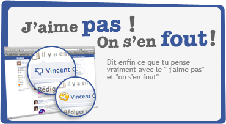
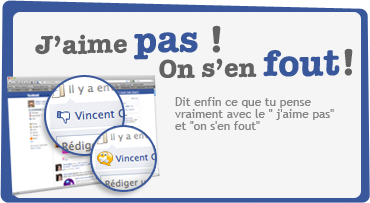
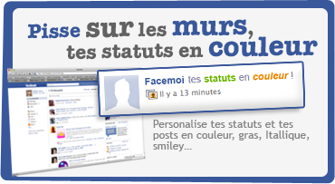
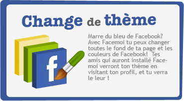

Facemoi est une extension compatible
avec Internet Explorer / Firefox et Chrome qui vous permet de
personnaliser votre profil Facebook.
Savoir qui visite ton profil facebook, changer de skin, bouton j'aime pas..c'est possible grâce à Facemoi !